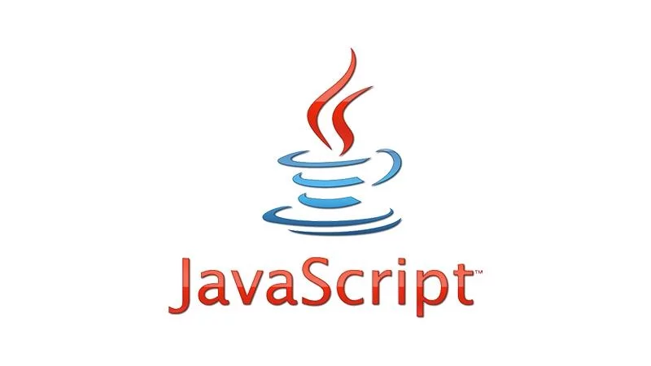

In 1986, a group of international standards organizations spun-off the Joint Photographic Expert Group (JPEG) to create a set of standards for digital images. By 1992, the group had determined a set of rules for what became the jpeg (or .jpg) format. Jpeg compression allows for a trade-off between photo quality and file size. Jpeg is one of the most popular image formats, and is the format most widely used by digital cameras.
Mosaic, the first browser supported by a major institution, starts the Web on the road from research project to blockbuster success. Written by brilliant student Marc Andreessen and UNIX expert Eric Bina at the National Center for Supercomputing Applications, Mosaic was modeled on the Viola and Midas browsers and also used the CERN code library. But NCSA quickly assigned teams to write UNIX, Mac, and PC versions, as well as servers. Unlike other browsers it was reliable and could be installed by amateurs. Along with other browsers around this time Mosaic added graphics within Web pages instead of in separate windows. Mosaic spread like wildfire.
 JavaScript, an object-based scripting language, is developed at Netscape Communications by Brendan Eich. It was used extensively across the Internet on both client and server sides. Although it shared its name with the Java programming language, the two are completely different.
At the end of 1996, the 36 million Web users surpass the 30 million or so on France’s Minitel, until now the most popular online system. By decade’s end, the Web will hit 360 million. By 2010, two billion.
Video applications for personal computers drive demand for increased graphical performance. A new approach, one based on a processor specially designed to manipulate graphics, was initiated and the resulting product was known as a “Graphics Processing Unit,” or “GPU.” The GeForce 256 is often thought of as the first consumer GPU, and while expensive, it sold extremely well. The GeForce 256 was designed to relieve the pressure on the central processing unit (CPU) by handling graphics calculations, while the CPU processed non-graphics intensive tasks.